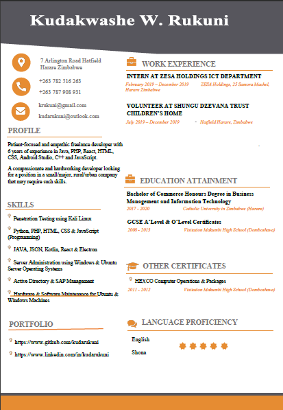

Kuda Rukuni
Software Engineer
🚀My Online Curriculum Vitae!🚀
I enjoy building ICT Solutions !!
👩🏽🚀Projects👩🏽🚀
Here is my GitHub Repository Link for all the projects i have worked on throughout my career as a Software Engineer.
🎓Qualifications🎓
Bachelor of Commerce Honours Degree in Business Management and Information Technology (BBM&IT)
Kudakwashe William Rukuni Resume
Here is my Linkedin Profile for my work related summary, currently set to open for work and business.
🌮Work Experience🌮
ZESA Holdings
INTERNSHIP PROGRAMME AT ZESA HOLDINGS MIS DEPARTMENT: February 2019 – December 2019. (25 Samora Machel, Harare Zimbabwe).
- Data Entry Clerk, Trouble Shooting and Network Operator.
Shungu Dzevana Childrens Home
INTERNSHIP PROGRAMME AT SHUNGU DZEVANA CHILDRENS HOME ICT DEPARTMENT: April 2019 - January 2020. (7 Alexandra Drive, Hatfield, Harare, Zimbabwe).
- ICT System Administrator
Netcast Systems
POST GRADUATE TRAINING AT NETCAST SYSTEMS DEVOPS DEPARTMENT: February 2020 - today. (7 Arlington Rd Hatfield Harare).
- Lead Software Engineer and Full Stack Web3.0 Blockchain, Smart Contract, Robotics, IoT and Web-Based Software Engineer
🏆Accomplishments🏆
June 2021:
- CATHOLIC UNIVERSITY IN ZIMBABWE: BACHELOR OF COMMERCE IN BUSINESS MANAGEMENT AND INFORMATION TECHNOLOGY HONORS DEGREE
- Degree Class 2.1
November 2013:
- VISITATION MAKUMBI HIGH SCHOOL: GCSE ADVANCED LEVEL:
- 3 A'Level passes
November 2011:
- VISITATION MAKUMBI HIGH SCHOOL: GCSE ORDINARY LEVEL
- 8 O'Level passes including English and Mathematics at Zimbabwe Secondary Education Council level
- 1 O Level passes including Computer Operations and Packages at Higher Education Examination Council level
A compassionate and hardworking Software Engineer looking for a position in a small/major, rural/urban company that may require my ICT skills.
📜Manifesto📜
Here’s to the crazy ones. The misfits. The rebels. The troublemakers. The round pegs in the square holes. The ones who see things differently. They’re not fond of rules. And they have no respect for the status quo. You can praise them, disagree with them, quote them, disbelieve them, glorify them or vilify them. About the only thing you can’t do is ignore them. Because they change things.
My purpose is to unite the world through code to create a healthy planet, active communities and an equal playing field for all.
This is your Life. Do what you love, and do it often. If you don’t like something, change it. If you don’t like your job, quit. If you don’t have enough time, stop watching TV. Life is about the people you meet, and the things that you create with them so go out and start creating. Life is short. Live your dream and share your passion.
Thanks for viewing my online Curriclum Vitae I am Kuda Rukuni! Hope i get the job.